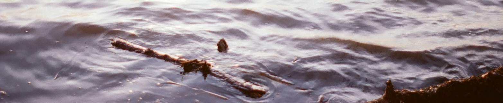

Home – Research – Papers – Teaching – Notes
Courses – Undergraduate – Photos – Blog

My current research is in a class of nonequilibrium systems termed as active matter. The principal motivation of the field came from the need to understand biological systems which are inherently out of equilibrium. Systems that are out of equilibrium display fascinating behaviour such as flocking in birds and clustering of bacteria. Such steady states are forbidden in equilibrium matter since they would disobey the second law of thermodynamics. Synthetically, microscopic active colloids (Janus particles) can be constructed which are self-propelled due to chemical reactions they undergo with the medium around it. The broad question to be answered is - how can complex emergent phenomenon arise from simple self-propulsion at the particle level, be it birds, bacteria or Janus particles. More is different, said P.W. Anderson, we probe this phenomenon in the specific case of active matter. Using molecular dynamics simulations, I study dry active matter i.e. without explicit accounting of hydrodynamics. If you are interested, do look at my publications and references within.
In my doctoral studies, towards explaining experimental
observations, I used a mix of numerical simulations/solvers and
analytical models arguments to corroborate the same. While the former is
indispensible when enquiring into the more realistic versions of the
model, the latter proves useful in studying the simplest version of the
model. Such an analytical study may provide simple mechanisms at work
which could possibly be the leading contribution to the experimental
observations. A match between the numerics and analytics for the
simplest case which can be solved by the latter provides confidence in
the implementation of numerical solvers.
Folding mechanism in cerebellum
The folds in the cerebellum are different from the folds in the
cerebrum in two ways. Unlike the cerebrum, the cerebellum has an
approximate cylindrical geometry which allows for two dimensional
modeling. Secondly, the folds in the cerebellum are scale-invariant
i.e. even the small cerebellums of mice have folds just like the bigger
cerebellums of pigs. In a developing cerebellum, the cortex is seen to
be the thickest at the troughs and thinnest at the crests. Purely
elastic models cannot explain such an observation in the developing
cerebellum. Recently the ’buckling
without bending model was introduced to explain the same. In an extension of the work we
studied the non-linearities of this model in terms of having non-linear
radial glial springs, steric effects due to confinement and the problem
of hierarchy. We could reproduce certain features of cerebellar growth
at later stages such as cusped troughs, squashed crests and hierarchical
folding.
The coupling between the Euler-Lagrange equations of
the two degrees of freedom in the problem introduces a robust quadratic
non-linearity of the form \(\left(\frac{dx}{d\theta}\right)^2\). To
isolate the effect of such a non-linearity in generating cusped sharp
troughs, we studied an unphysical oscillator called the
`assisting-dampening oscillator’ which is a simple harmonic oscillator
with a forcing term of \(\left(\frac{dx}{d\theta}\right)^2\). We see
sharp cusps even in this simple oscillator.
Convexity induced rigidity transitions in spring networks
With sufficient number of constraints/springs in a spring network, we
can rigidify the network. By increasing the number of such constraints,
we can remove the degrees of freedom of the network in its configuration
space. When all the degrees of freedom are removed, the network is said
to be rigid.
In other words, a floppy mode is a non-trivial
deformation that doesn’t cost the network any energy. When a network has
no floppy modes, it is said to be rigid. Using the rank-nullity theorem
from linear algebra, we can study the compatibility/rigidity matrix of
the network which encodes the geometry of the network. We can then find
the presence/absence of floppy modes and thus know whether the network
is floppy/rigid.
Even with insufficient springs, we can bring
rigidity to the network by imposing an external strain. For example, a
1D chain of springs is floppy. But, upon uniaxial tension, it
rigidifies. This is called a strain induced rigidity transition. We are
currently studying spring networks under isotropic expansion strain and
investigating the role convexity has in inducing a rigidity
transition.
Null model for mouse neural network
Using the principles of statistical mechanics, we can produce maximally unbiased ensemble of networks which obey the constraints imposed by the real world networks. Such models prove useful in constructing null models with which the real world networks can be compared against. With the data of Allen brain atlas for mice, we use the number of neighbors for nodes as the constraints of the real world network and produce a maximally unbiased ensemble of networks which obey these constraints on an average. This formalism is exactly equivalent to the canonical ensemble formalism of statistical mechanics and is analytically tractable to an extent.